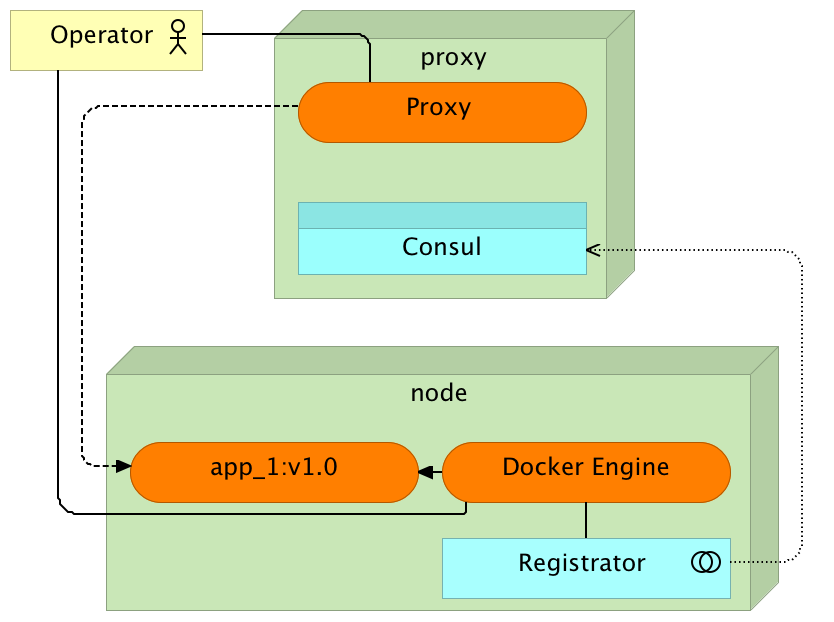
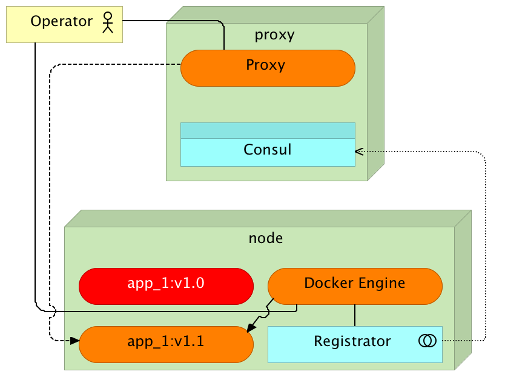
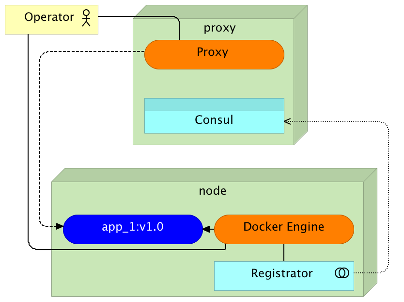
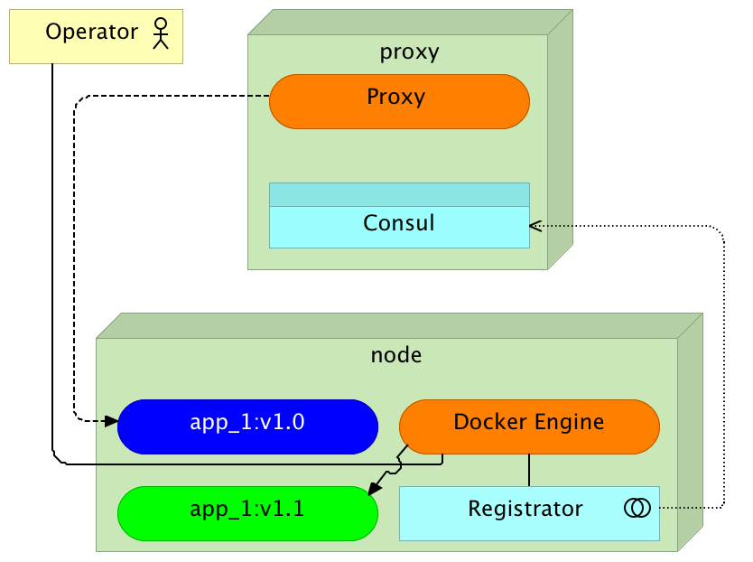
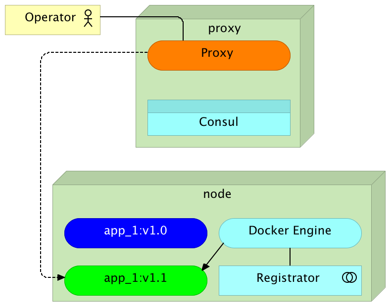
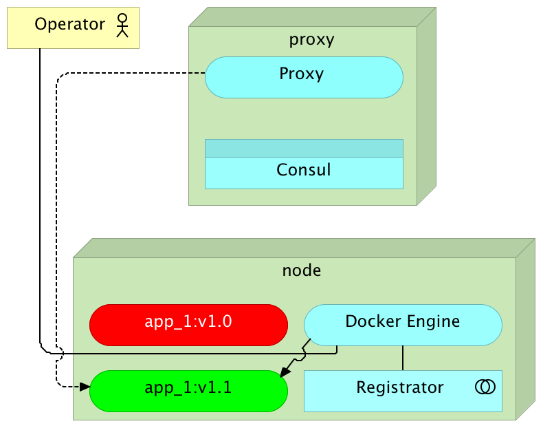

The
DevOps 2.0 Toolkit
Viktor Farcic
@vfarcic
TechnologyConversations.com
CloudBees.com
Viktor Farcic


Facing the truth
Agile changed the way we develop software
... but it failed to change how we deliver it
What is DevOps?
A cross-disciplinary community of practice dedicated to the study of building, evolving and operating rapidly-changing resilient systems at scale.
What is DevOps?
It is as much cultural as technological change
... but not today
Why DevOps 2.0?
DevOps united and automated
... but it failed to change
2.0 introduces a change to processes, tools, and architecture
... and enables continuous deployment and self-healing
The Toolkit
- Configuration management and provisioning
- Immutable deployments
- Service discovery
- Dynamic proxies
- Zero-downtime continuous deployment
- Cluster management
- Self-healing
- Centralized monitoring and logging
- ... and much more
The Toolkit
Everything fully automated without human intervention
Machines take over after a commit to CVS
The Toolkit
Not a workshop
Pointers and leads
Configuration Management
- Manual?
- SSH?
- Operators == bottleneck
- Self-service
- Self-healing
- Automated
- Proactive
Configuration Management


Configuration Management
- Timeframe changed
- Scope changed
- Clusters changed
Configuration Management
git clone https://github.com/vfarcic/ms-lifecycle.git
cd ms-lifecycle
vagrant up cd swarm-master swarm-node-1 swarm-node-2
vagrant ssh cd
ansible-playbook /vagrant/ansible/swarm.yml \
-i /vagrant/ansible/hosts/prodConfiguration Management
Configuration, common programs, Docker, Docker Flow, Consul Template, Registry, Consul, Swarm master, Swarm nodes, Registrator, ...
A fully operating cluster
Configuration Management
Not for deploying applications
... what to use?
Mutable Deployments
- Infrastructure hell
- Unreliable testing
- Unexpected production behaviour
Immutable Deployments
- Reliable
- Works everywhere the same
- Why aren't we all doing it?
Immutable Deployments
- VMs are slow
- VMs use too much resources
- Containers are too complicated
Docker
- Immutable
- Isolation
- Fast
- Lightweight
- Self-sufficient
- No infrastructure
- ...
Docker
git clone https://github.com/vfarcic/go-demo.git
cd go-demo
docker-compose -f docker-compose-test.yml run --rm unit
docker build -t vfarcic/go-demo .
docker-compose up -d db app
docker-compose ps
docker-compose downDocker
Does not schedule deployment to a cluster
... what to use?
Cluster Management
- Pets vs cattle
- SSH should be illegal
- Dynamic
- Elastic
- Automated
- Self-healing
Cluster Management


Cluster Management
export DOCKER_HOST=tcp://swarm-master:2375
docker info
docker-compose up -d db app
docker-compose ps
docker ps -a
docker-compose scale app=3
docker-compose ps
docker-compose exec app ping -c 1 dbCluster Management
- No service/application dependencies
- It's a cluster, not individual servers
- Almost instant
- Scale/descale effortlessly
- Software Defined Network (SDN)
Cluster Management
We don't know, in advance, where will the services run
... how to configure services?
Service Discovery
- Where are my services?
- Static configuration?
- Service discovery
- Registry
- Registration
- Templating
Service Discovery
Registry


Service Discovery
Registration & Templating
Avoid coupling
Service Discovery
docker ps
docker logs swarm-node-1/registrator
curl swarm-master:8500/v1/catalog/service/go-demo | jq '.'Service Discovery
We have the data, but we do not want to couple and our users do not want to request it from Consul
... how do we make services accessible?
Dynamic Proxy
- Hardware proxy?
- Proxy service
Dynamic Proxy


Dynamic Proxy
curl -i cd/demo/hello
sudo docker run -d \
--name docker-flow-proxy \
-e CONSUL_ADDRESS=10.100.192.200:8500 \
-p 80:80 -p 8081:8080 \
vfarcic/docker-flow-proxy
curl "cd:8081/v1/docker-flow-proxy/reconfigure?serviceName=go-demo&servicePath=/demo" | jq '.'
curl -i cd/demo/hello
docker-compose down
curl "cd:8081/v1/docker-flow-proxy/remove?serviceName=go-demo" | jq '.'Dynamic Proxy
Now we can reach any service, anywhere
... but how do we deploy without downtime?
Zero Downtime Deployment
- Replace the old release with the new one?
- Rolling updates
- Blue-green deployment
Standard Deployment
Standard Deployment

Standard Deployment

Blue-Green Deployment
Blue-Green Deployment

Blue-Green Deployment

Blue-Green Deployment

Blue-Green Deployment

Docker Flow
https://github.com/vfarcic/docker-flowexport FLOW_PROXY_HOST=10.100.198.200 && export FLOW_PROXY_RECONF_PORT=8081 && export FLOW_CONSUL_ADDRESS=http://10.100.192.200:8500 && export FLOW_PROXY_DOCKER_HOST=tcp://10.100.198.200:2375
docker-flow --flow=deploy --flow=proxy --flow=stop-old
docker ps -a --format "table {{.Names}}\t{{.Status}}\t{{.Ports}}"
curl -i cd/demo/hello
docker-flow --flow=deploy --flow=proxy --flow=stop-old
docker ps -a --format "table {{.Names}}\t{{.Status}}\t{{.Ports}}"Blue-Green Deployment
Now there is no downtime caused by deployment process
... but there's much more to it than only deployment
Continuous Integration
- Automated integration flow
- Merge to main branch often (at least once a day)
- Fixing failed flow has the highest priority
- Unclear status
- Not a "production ready" process
Continuous Delivery
You're doing it when...
- you are already doing continuous integration
- your software is deployable throughout its life-cycle
- your team prioritizes keeping the software deployable
- anybody can get fast, automated feedback on the production readiness
- you can perform push-button deployments
Continuous Delivery
Means that...
- every commit to VCS that passed the flow can be deployed to production
- pressing the button to deploy to production is the only manual action
CD Tools
- Ability to define (sometimes) complex flows
- Flows defined as code
- Team's autonomy
- Decentralization
Jenkins Setup
ansible-playbook /vagrant/ansible/jenkins-node-swarm.yml \
-i /vagrant/ansible/hosts/prod
ansible-playbook /vagrant/ansible/jenkins.yml \
-c local
git clone http://10.100.198.200:8080/workflowLibs.git /tmp/workflowLibs
cd /tmp/workflowLibs
git checkout -b master
mkdir vars
cp ~/go-demo/jenkins/vars/dockerFlowWorkshop.groovy \
/tmp/workflowLibs/vars/dockerFlow.groovy
git config --global user.name "vfarcic"
git add --all && git commit -a -m "Docker Flow"
git push --set-upstream origin masterJenkinsfile
def serviceName = "go-demo"
node("cd") {
checkout scm
stage "Unit Tests"
sh "docker-compose -f docker-compose-test.yml run --rm unit"
stage "Build"
sh "docker build -t vfarcic/go-demo ."
// sh "docker push vfarcic/go-demo"
stage "Deploy"
dockerFlow(serviceName, ["deploy", "proxy", "stop-old"])
stage "Production Tests"
withEnv(["HOST_IP=10.100.198.200"]) {
sh "docker-compose -f docker-compose-test.yml run --rm production"
}Deployment With Jenkins
http://10.100.198.200:8080 > New Item
Item Name: go-demo; Type: Multibranch Pipeline > OK
Add Source > Git
Project Repository: https://github.com/vfarcic/go-demo.git > Save
What Else?
- Self-healing
- Centralized monitoring and logging
- Architecture
- Culture
- ...
Viktor Farcic
Viktor Farcic
@vfarcic

TechnologyConversations.com
Viktor Farcic


Cleanup
exit
vagrant destroy -f